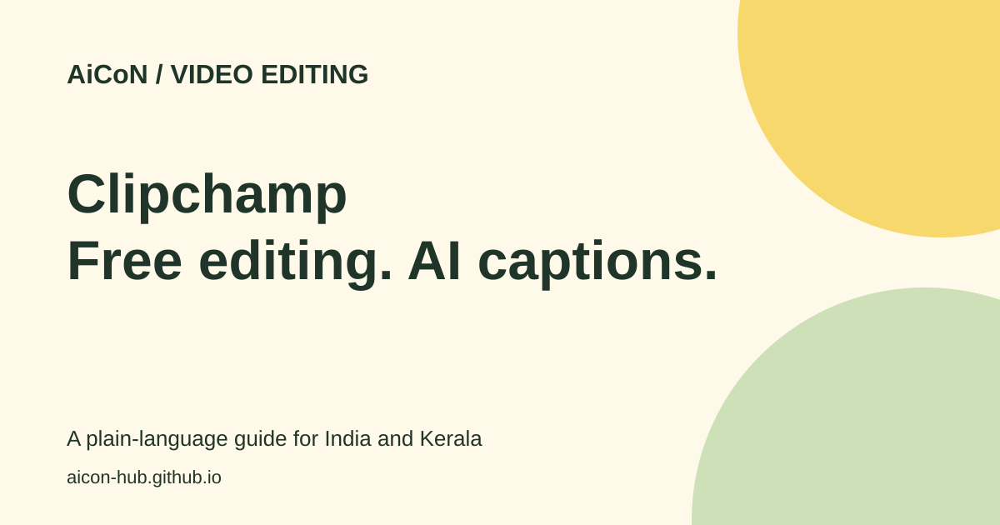

Clipchamp: free video editing and AI captions
Clipchamp is Microsoft's video editor. Its free plan can turn a recording into a finished video with captions, voiceovers and fewer long pauses.

What is Clipchamp?
Clipchamp lets you trim clips, join recordings, add text and export a video. AI captions turn speech into text on the screen. An AI voiceover reads typed text aloud. Silence removal finds pauses so you can review and cut them.
You do not need to buy a paid plan to make a normal 1080p video. Microsoft says the free personal plan allows unlimited exports without watermarks. This does not make every stock clip, template or feature free.
Why it is useful in Kerala and India
A student can caption a seminar recording. A small business can make a product video. A teacher can shorten a lesson before sharing it. Captions also help people watching with the sound off.
Try a short sample before editing a long Malayalam or mixed-language recording. The official page advertises more than 100 caption languages, but this check did not confirm Malayalam support or accuracy. Names, local words and code-switching can need manual fixes.
How to make a captioned video
- Open the official Clipchamp site and choose the personal editor. Sign in with the account you want to use.
- Create a video project. Import your recording, then place it on the timeline. The timeline is the strip where you arrange clips in order.
- Trim unwanted parts. Keep an untouched copy of the original recording.
- Open the captions tool and choose the language of the speech. Generate captions, then play the video and correct mistakes.
- Choose a readable font and a high-contrast caption background. Keep text away from the bottom edge where social apps show buttons.
- If you use silence removal, review each suggested cut. A pause can be part of the meaning, so do not remove every pause without watching.
- Choose export, then up to 1080p for the free route. Download the video. The captions page also describes downloading an SRT file, a separate text file with caption timings.
- Play the saved video before publishing. Check spelling, sound level, framing and captions on a phone.
Free or paid?
| Free | Basic editing, unlimited watermark-free exports up to 1080p, AI subtitles, voiceovers and silence removal. |
|---|---|
| Paid | The current pricing page includes premium features with Microsoft 365 Personal and Family. These include 4K export, premium stock and the brand kit. |
| India price | No fixed INR amount is quoted here. Check the Microsoft checkout for the current Indian plan price, tax and billing period before paying. |
| Work or college | Some Microsoft 365 business and education licences include the work version. Do not assume your college account has the same features as a free personal account. |
Limits and safe use
Use recordings you own or have permission to edit. A tool being free does not give permission to use someone else's music, face or private conversation. Review AI output rather than treating it as a transcript you can trust without checking.
This guide checks the personal plan. It does not verify every browser, device or Indian app-store route. Start with the web editor on a computer and follow its current browser requirements. Do not assume a full Android editor is available.
The free-plan claims remain supported by the official pricing page on 6 October 2026. Premium is now described as part of Microsoft 365 Personal and Family. No promise is made about Malayalam captions, local checkout prices or results on every device.
Frequently asked questions
Does the free version add a watermark?
Microsoft says free exports have no watermark. Stay within the assets and options included in your plan.
Can I export in 4K for free?
The pricing page puts 4K in the premium column. Free export is up to 1080p.
Can I use it for a Malayalam video?
You can edit your own recording, but check the caption language list in the editor. Malayalam caption support and accuracy were not verified in this review.
Will silence removal make every cut correctly?
Do not assume so. Review the cuts and keep meaningful pauses.
Sources: Clipchamp pricing · Caption guide · Microsoft silence removal help. Checked 6 October 2026.